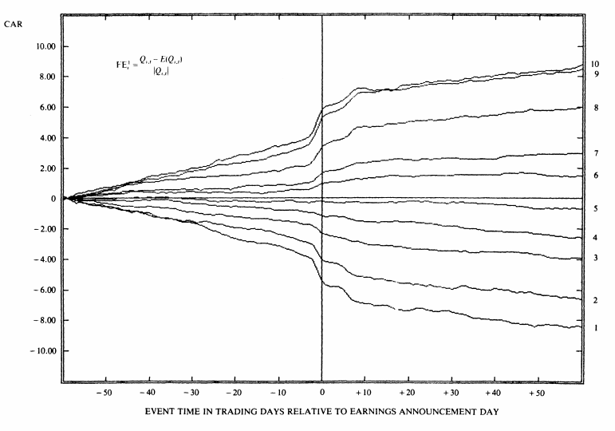
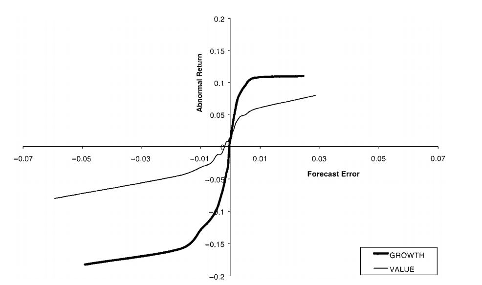

Earnings Announcements and Forecasting Future Earnings
Background
Earnings announcements are one of the biggest corporate events of the year. The Securities and Exchange Commission (SEC) requires publicly traded firms to report financial statements on a quarterly basis (Forms 10-Q and 10-K).1 Often prior to filing the required financial statements firms provide a press-release, or announcement, of the earnings achieved over the prior quarter and / or year. This press-release, which is also required to be filed with the SEC (attached to Form 8-K), is typically referred to as the earnings announcement. Accounting research has provided a significant body of evidence that, on average, share prices increase when earnings increase, and firms with higher than expected earnings experience a price increase on the day of the earnings announcement. Investors typically pay a great deal of attention to earnings announcements, and increase trading around this information event.
Important dates at fiscal year-end.

As illustrated, periodic filings are expected over a fairly predictable time-line. It is probably not surprising, therefore that many firms choose to report earnings in a predictable manner by setting a day, and / or time to report earnings. On the day of the earnings announcement, firms tend to report earnings either before the market opens, or after the market closes.2
The content of these press-releases varies by company, but will often include an unaudited set of financial statements, additional measures of performance not required by GAAP (collectively labeled non-GAAP, or pro-forma disclosures), qualitative discussion of the performance of the firm, and forward-looking information including management’s own earnings forecasts.
What does the data tell us about earnings announcements?
Why should you pay attention to earnings? Analysis of the effect of earnings announcements on stock returns using a large sample of data first appeared in a paper by Philip Brown and Ray Ball in 1968. At the time, earnings were generally considered as of extremely low usefulness, “It [earnings] is thus alleged to be a "meaningless" figure, not unlike the difference between twenty-seven tables and eight chairs” (Ball and Brown 1968). Earnings, however, move the market. See Figure 1 for evidence of the market both predicting and reacting to earnings. Specifically, the strongest correlation between the earnings news and market returns in the 3 to 5 days before the earnings announcement and that the correlation between the earnings news and subsequent returns is strongest in the 3 to 5 days following the earnings announcement.
Figure 1
Market returns around quarterly earnings announcements

Notes: The figure is taken from Foster et al. (1984) and plots the market returns in the 60 days prior to and following the announcement of quarterly earnings. Firms are assigned to groups based on their year-over-year change in quarterly earnings to control for seasonality effects.
Additional evidence is provided in Figure 3 relating to the sensitivity of stock market returns to earnings news. In this case, the amount of news is measured relative to the most recent analysts’ forecasts of earnings, often referred to as the consensus analyst forecast, or “Street” expected earnings (where street is short for Wall Street). Note that the response is non-linear (it is steeper near zero earnings news and flatter for larger amounts of earnings news). The steepness of the market response to earnings news is significantly higher around zero, and is more extreme for firms that just miss their earnings target, and for growth firms (implying earnings news is incrementally important for firms with high levels of expected growth). This strong response of markets to small misses of the earnings target creates a strong incentive for managers to report earnings figures that do not miss the expected earnings.
Figure 3
The sensitivity of market returns to earnings news

Notes: The figure is taken from Skinner and Sloan (2002) and plots the total market return for the 3-days around the earnings announcement relative to the amount of earnings news (labeled the forecast error). The response is non-linear, and differs depending on whether the firm is characterized as a “growth stock” or a “value stock.” Growth stocks are those with high ratios of market value to accounting book value, and value stocks are those with low ratios of market value to accounting book value.
Conference calls
Shortly after announcing earnings, many firms will hold a conference call. Conference calls are not mandatory, but most public firms will hold a conference call; and many webcast the call (i.e., broadcast the call over the internet).3 Conference calls are typically undertaken in two parts. First, managers discuss the performance of the firm over the past quarter, or in the case of the fourth quarter, the performance of the firm over the prior year. This section of the call is largely scripted, and is heavily related to the original press release of the firm, the “earnings announcement.”
The second section of the call is the Question and Answer (Q&A) part of the call. In this section, analysts are able to ask questions of the management. Analysts’ questions generally fall into two categories, those which are forward-looking, and those which are aimed at better understanding, or clarifying, the performance of the firm over the past period. Often these clarification questions are aimed at better understanding the accounting techniques used by management. As conference calls are a standard feature of the disclosure of accounting information, managers typically have a good sense of which questions are likely to be asked, and prepare responses to these questions. Often managers or investor relations will communicate with analysts beforehand in an effort to prepare responses to analysts’ questions. In general, this facilitates a more open sharing of information between managers and their analysts, and those investors listening into the call.
Note, however, that there is no rule or regulation that states that managers have to answer questions. Sometimes managers don’t completely answer questions as they don’t want to give away information on the competitive advantages of the firm. Other times, however, managers don’t have sufficient information to answer forward-looking questions due to the uncertainty related to future events.
Analysts
Equity analysts aim to use current period accounting data to forecast future financial metrics (such as earnings, and free cash flows). The resulting forecasts are often part of an analyst report for the company they are following, a report that usually includes a specific stock recommendation (e.g., strong buy, buy, hold, sell, strong sell). Accounting provides a significant amount of aggregation of underlying business transactions. An important problem faced by the analyst when forecasting earnings is how to incorporate the expected differences in the likelihood that certain groups of transactions will recur, that is, happen again in the future. To address this problem, analysts typically forecast a firm’s sales, expenses and earnings. To do so, analysts collect and use the prior disclosures made by the firm (such as prior 10-Q’s, 10-K’s, earnings press releases and conference calls) to understand the financial metrics that are important to the company. The most common performance metrics include earnings per share (EPS) and revenue. Note any industry specific metrics used by the firm such as same store sales (for brick and mortar retailers) or funds from operations (real estate investment trusts). Managers sometimes make analysts’ forecasting tasks easier by providing forward-looking guidance for the current quarter or year, such as forecasts of sales, margins or earnings.
Read the earnings announcement press release and the conference call transcripts
The full earnings announcements for both Fiscal Year 2016 and Quarter 1 2017, as well as the corresponding conference calls and the 10-K, are posted to Canvas. Please use these information sources, along with your own information search to answer the following questions.
What are Starbucks three main revenue sources?
Read through the beginning of Starbuck’s earnings press release (“Q12017SBUXEAD”). Which accounting metrics do they highlight? Which of these seems the most relevant and why?
What are Starbucks key growth opportunities?
What are Starbucks key competitive advantages?
With growth comes growing pains. What growing pains are occurring as a result of the new “mobile order and pay” app? What are they doing to solve this?
Read through the section “Fiscal 2017 Targets.” What information is Starbucks providing here? How might investors use this information?
Research the market’s response to the Q1 earnings announcement. Did the market believe that Starbuck’s earnings announcement was good news?
Read through the Q&A section of the conference call transcript. What is the main focus of the analysts’ questions? Why is this expected to be important?
Propose a question that you would have liked to have asked Starbuck’s management if you were on the conference call. Explain why this is potentially an important question.
Prior to Regulation-Fair-Disclosure (Reg-FD) firms could choose to hold “closed conference calls” which were by invitation only. Based on your read of Starbuck’s conference call, why might regulators have made closed conference calls illegal?
References
Ball, R., and P. Brown. 1968. An Empirical Evaluation of Accounting Income Numbers. Journal of Accounting Research 6 (2):159-178.
Foster, G., C. Olsen, and T. Shevlin. 1984. Earnings Releases, Anomalies, and the Behavior of Security Returns. The Accounting Review 59 (4):574-603.
Skinner, D. J., and R. G. Sloan. 2002. Earnings Surprises, Growth Expectations, and Stock Returns or Don't Let an Earnings Torpedo Sink Your Portfolio. Review of Accounting Studies 7 (2):289-312.
Footnotes
Deadlines differ by firm size. Large accelerated filers (those with market caps of $700 million or more) must file their 10-K within 60 days and their 10-Qs within 40 days of their fiscal period end. Accelerated filers (those with market caps of at least $75 million) must file their 10-K (10-Qs) within 75 days (40 days) of their fiscal period end. Finally, non-accelerated filers (those with market caps less than $75 million) must file their 10-K (10-Qs) within 90 days (45 days) of their fiscal period end.
↩Some investors trade after hours, note, however, that the afterhours market is less liquid than the regular trading hours.
↩Since Regulation Fair Disclosure (Reg-FD) conference calls must be made open to the public, prior to Reg-FD some companies had closed, or private conference calls with selected analysts and investors.
↩